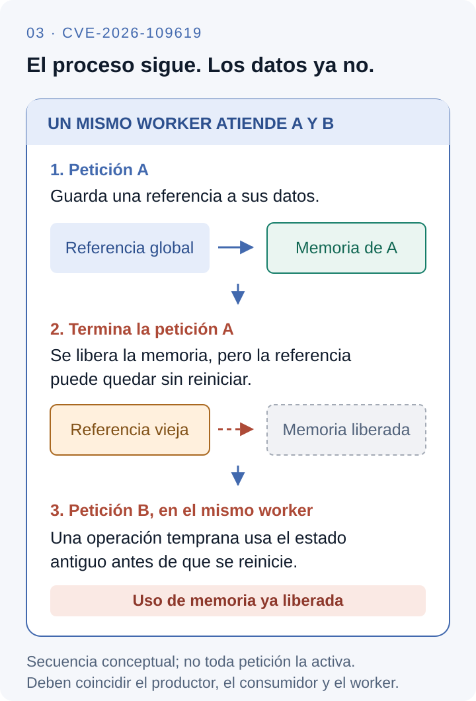
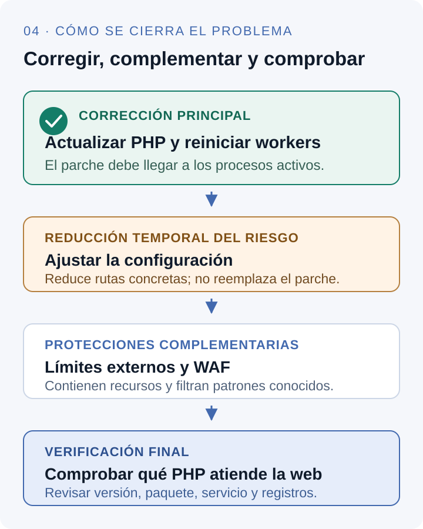

PHP2Shell es una historia de invariantes que dejan de cumplirse cuando una operación se interrumpe. Una estructura pasa a ser visible antes de estar lista; una variable global sobrevive a los datos que señala; una rutina de limpieza confía en un estado que el camino de error no consiguió restaurar.
Los identificadores CVE-2026-109618 y CVE-2026-109619 agrupan dos familias relacionadas: corrupción durante la salida por agotamiento de memoria y uso de estado global obsoleto. La publicación conjunta del 21 de octubre de 2026 no significa que fueran un único bug, que todas las variantes existieran desde la misma versión ni que todo servidor PHP pudiera explotarse de la misma manera.
La cronología recorre primero los antecedentes y después reconstruye las rutas descubiertas en 2026. Los nombres y el orden interno se contrastan con PHP 8.5.11, anterior al parche, y PHP 8.5.12, corregido; al estudiar otras ramas hay que revisar su implementación. Los bloques señalados como pseudocódigo condensan el comportamiento y omiten ramas. Las fechas históricas indican cuándo ocurrió o se comunicó un hecho; las explicaciones técnicas reconstruyen lo que sucedía dentro del motor.
Antecedente
El límite de memoria ya podía interrumpir una operación insegura
Stefan Esser publica un aviso sobre PHP 4.3.7 y anteriores y PHP 5 hasta 5.0.0RC3, identificado entonces como CAN-2004-0594. Describe ejecución remota mediante la terminación de una petición por memory_limit en puntos donde las estructuras todavía no estaban completamente inicializadas. Había desarrollado un exploit funcional y decidió no publicarlo. El aviso tiene fecha de publicación del 14 de julio, aunque el mensaje archivado registra un envío la noche anterior. Aviso original de Esser.
El antecedente importa por su modelo de fallo. Para evaluar una operación que administra memoria hay que mirar al menos cuatro momentos: reserva, inicialización, publicación de referencias y destrucción. Si una referencia se publica antes de completar la inicialización, el código de salida debe reconocer ese estado intermedio. Si la salida evita la restauración y el destructor supone que todo está listo, el manejo del error se convierte en otro acceso inseguro.
Esser observó esta clase de problema en la inicialización de tablas hash y explicó que el consumo interno podía amplificar mucho los bytes enviados. Ese análisis no describe los mismos CVE de 2026: las estructuras, las versiones y las rutas concretas cambiaron. Sí anticipa dos preguntas que reaparecerían: cómo alcanzar el límite en un punto elegido y qué limpieza se ejecuta después de alcanzarlo.
Qué significa un bailout en el motor
En el Zend Engine de las versiones modernas afectadas, zend_try instala un punto de recuperación con la familia de operaciones setjmp. Un zend_bailout() puede transferir el control a ese punto mediante un salto no local. Es infraestructura escrita en C: no es una excepción PHP que recorra automáticamente todas las operaciones de limpieza pendientes de las funciones intermedias. El código posterior a la llamada que provocó el salto puede quedar sin ejecutar. Macros de bailout en PHP 8.5.11.
/* Modelo del control de flujo, no implementación literal de Zend. */
instalar_punto_de_recuperacion();
publicar_estado_temporal();
operacion_que_puede_agotar_memoria();
restaurar_estado_temporal(); // el salto puede omitir esta parte
punto_de_recuperacion:
cerrar_peticion(); // encuentra el estado que haya quedadoEl problema puede ocurrir dentro de un único hilo: no exige una carrera concurrente entre dos threads. Se trata de atomicidad frente a fallos: la operación se interrumpe entre la publicación y la restauración de un invariante. Añadir un bloqueo entre hilos no corrige por sí mismo una salida que abandona la región crítica sin restaurar su estado.
También conviene separar el límite lógico de PHP de la memoria física. memory_limit es una política del runtime sobre la memoria que contabiliza; el RSS del proceso incluye otros componentes y no es una lectura equivalente. Puede alcanzarse ese límite con RAM disponible en la máquina. La posterior corrección tendrá que preservar el control de consumo y, a la vez, evitar una interrupción insegura. Semántica de memory_limit.
Cambio de arquitectura
PHP 5.4 incorpora progreso de subidas y amplía el trabajo anterior al script
Con PHP 5.4 aparece el seguimiento de progreso de subidas asociado a las sesiones. Cuando está habilitado, el parser multipart puede actualizar una sesión mientras recibe un archivo. El manual advierte que esa información se escribe antes de ejecutar los scripts. La extensión de sesiones participa así en una fase que precede a la inicialización ordinaria de los módulos. Manual de progreso de subidas.
Para seguir el resto de la historia hay que distinguir tres vidas. El proceso —o el contexto de ejecución en una compilación con threads— puede atender muchas solicitudes. El heap administrado por Zend para una petición contiene datos que deben dejar de utilizarse al cerrarla. Algunos globals del motor y de las extensiones viven en el contexto persistente del worker, aunque temporalmente señalen ese heap.
| Dominio | Ejemplos | Contrato relevante |
|---|---|---|
| Petición | zval, arrays y cadenas temporales. | Sus referencias deben retirarse antes de destruir su almacenamiento. |
| Worker | PS(...), BG(...), EG(...). | Conservar el contenedor global no prolonga la vida de la memoria apuntada. |
| Memoria compartida | Estructuras persistidas por OPcache. | Los metadatos compartidos y los mapas locales tienen que avanzar de forma consistente. |
Las macros no identifican tres heaps: PS accede a globals de sesiones, BG a los de funciones básicas y EG a los del ejecutor. En builds con ZTS el acceso está asociado al contexto del thread. Llamarlos «globales» no significa que todos los procesos del servidor compartan la misma dirección.
La posición de RINIT es parte de la superficie de ataque
En el ciclo habitual, MINIT inicializa un módulo al arrancar el runtime; RINIT prepara su estado por petición; RSHUTDOWN lo cierra. El progreso de subidas ofrece una entrada especial que puede utilizar sesiones antes del RINIT ordinario. En la rama 8.5.11, el orden relevante de php_request_startup() pasa por el parseo de variables antes de zend_activate_modules(). Ciclo de petición en main/main.c.
zend_activate()Inicialización del ejecutor y del compilador.php_hash_environment()Puede entrar al parser multipart y a callbacks de sesiones.zend_activate_modules()RINIT ordinario de las extensiones.PG(modules_activated) = 1Importa para decidir si se ejecuta RSHUTDOWN.php_execute_script()El programa PHP ya puede realizar autenticación y su lógica.php_request_shutdown()Destructores, módulos y liberación de memoria según la ruta.La variable PG(modules_activated) evita invocar cierres ordinarios de extensiones que todavía no completaron su arranque. Esa decisión es razonable bajo un contrato convencional. Se vuelve delicada cuando un callback temprano ya creó estado de una extensión y después una interrupción impide llegar al punto de activación.
Reporte y corrección en 2020
El bug #78876 muestra que abortar el parser también puede romper la limpieza
El reporte #78876 se presenta contra PHP 7.2.25. Su título describe variables multipart largas que provocan OOM y archivos temporales que no se eliminan. El caso concreto involucra un contador int de longitud que se desborda; al convertirse para una operación de reasignación, el tamaño pasa a ser enorme y la asignación falla. Los temporales de archivos procesados anteriormente quedan pendientes. El caso se asocia a CVE-2019-11048 y el registro se cierra en mayo de 2020. Reporte, discusión y commits históricos.
La fecha importa porque varias reconstrucciones retrospectivas lo sitúan en 2020. Ese fue un año de seguimiento y corrección; la presentación original es de noviembre de 2019. Su diagnóstico tampoco debe ampliarse automáticamente a la ejecución remota de PHP2Shell: el reporte documenta su propio overflow y un efecto de disponibilidad y limpieza.
Qué revelaba técnicamente el síntoma
Procesar un multipart es una transacción parcial sobre varios recursos: buffers, arrays que describen campos, archivos temporales y callbacks. Recibir una parte puede crear recursos que todavía deben retirarse si falla una parte posterior. La operación no termina de forma segura solo porque el servidor devuelve un 500 o un 502: el cierre debe dejar coherentes tanto la memoria como los recursos externos.
parte 1 → crear temporal T1 → registrar sus metadatos
parte 2 → crear temporal T2 → registrar sus metadatos
parte 3 → falla una asignación → se abandona el parseo
contrato esperado:
retirar registros parciales y limpiar T1 y T2
riesgo general de la clase:
saltar la ruta que conoce qué recursos ya se crearonLos recursos externos y las referencias de memoria son problemas distintos, pero ambos obligan a preguntar dónde se registra la propiedad del recurso y quién conserva información suficiente para limpiarlo. Corregir el contador del parser elimina esa causa concreta de asignación errónea; no prueba que todos los demás puntos de interrupción del motor sean seguros.
Por eso una revisión del manejo de OOM debe seguir el control después del error. El punto donde se detecta la falta de memoria puede estar lejos del consumidor que termina interpretando el estado inválido. Una caída dentro de un destructor, por ejemplo, puede ser la manifestación tardía de una publicación incompleta ocurrida al registrar un campo HTTP.
2024 → Auditoría
La auditoría encuentra indicios y el arreglo queda atrapado en sus costes
Quarkslab realiza una auditoría durante casi dos meses de 2024, coordinada mediante OSTIF y la Fundación PHP. OSTIF publica los resultados el 10 de abril de 2025: revisión manual, pruebas dinámicas, trabajo sobre herramientas y criptografía, con un alcance limitado por tiempo. El informe enumera 27 hallazgos, 17 con impacto de seguridad. Resultados y alcance publicados por OSTIF.
La Fundación PHP explica después que un desarrollador del core encontró las primeras señales del problema OOM al corregir uno de los hallazgos de Quarkslab. En 2024 se consideró la posibilidad de explotación, pero no se habían identificado vectores concretos. Las soluciones estudiadas implicaban compromisos de compatibilidad, denegación de servicio o cambios en extensiones de terceros. El equipo reconoce que la toma de decisiones y la falta de recursos hicieron que el trabajo se detuviera y retomara repetidamente. Retrospectiva de la Fundación PHP.
Por qué cambiar la semántica de emalloc afecta a todo el runtime
Muchas funciones internas se escriben bajo un contrato práctico: una asignación devuelve memoria utilizable o abandona la ejecución mediante el mecanismo fatal. Convertir todas esas llamadas en operaciones que devuelven NULL exigiría comprobar y propagar el fallo en una cantidad muy grande de lugares. Un solo llamador que continúe suponiendo que obtuvo memoria introduciría otra clase de acceso inválido.
Reordenar una asignación puede cerrar un caso, pero no necesariamente la familia. La operación interrumpida podría actualizar contadores, publicar un puntero, liberar una referencia anterior, ejecutar callbacks o modificar metadatos persistentes. Cada secuencia exige un contrato válido también en sus estados intermedios.
Hay además una tensión entre integridad y disponibilidad. Terminar inmediatamente todo proceso que alcanza el límite evita algunos consumidores posteriores, pero convierte cada OOM alcanzable en una muerte del worker. Permitir que siga trabajando sin límite conserva la ejecución a costa de consumo no acotado. La solución necesita definir dónde se puede abandonar una operación y qué hacer si no se llega a ese punto con recursos suficientes.
→ Descubrimiento
La presión de memoria se convierte en una interrupción controlable
Calif comienza su auditoría de PHP el 30 de julio dentro de Patch the Planet. Su relato fecha el primer hallazgo el 1 de agosto: una forma de provocar un fatal por OOM y un punto de interrupción con el que pudo construir una cadena contra WordPress. El uso de IA formó parte de la revisión y de la búsqueda de variantes; la evidencia relevante son las rutas y las demostraciones que los investigadores consiguieron reproducir. Cronología e investigación de Calif.
Primer problema: el tamaño del cuerpo no equivale al coste de representarlo
El parser recibe bytes, pero crea estructuras nativas. Un campo anidado puede necesitar varias tablas hash, buckets y claves; una descripción de archivo puede distribuir sus atributos en diferentes subarrays. El coste depende de la forma de los datos, de sus metadatos y del trabajo que generan.
memoria de procesamiento ≈
buffers del parser
+ cadenas y claves
+ tablas hash y sus Buckets
+ zvals de los valores
+ metadatos de archivos y de sesiones
+ reservas y alineación del allocator
bytes del cuerpo HTTP ≠ bytes del heap de la peticiónEn el parser vulnerable, post_max_size se contrasta al comienzo con la longitud declarada en SG(request_info).content_length. Ese chequeo no sustituye contabilizar todo el flujo decodificado ni el crecimiento de sus estructuras. El código también limita el número de partes, de modo que evaluar una ruta requiere revisar los límites que realmente quedan efectivos en esa rama. Parser RFC1867 de PHP 8.5.11.
El formato HTTP puede permitir entregar un cuerpo sin una longitud declarada útil para ese chequeo: en HTTP/1.1, la codificación por chunks establece el fin mediante el propio framing. Además, si un filtro de entrada descomprime el contenido, el tamaño declarado puede representar bytes comprimidos y no el flujo que procesa PHP. La existencia de esas rutas depende de lo que acepte y entregue el frontend; no implica que cualquier proxy se comporte igual. Framing chunked en RFC 9112 · Rutas OOM documentadas por PHP.
Otra ruta usa el trabajo de metadatos generado por controles de archivo vacíos y nombres anidados. Aunque un control vacío no cuente como archivo subido, procesarlo puede crear estructura. También importan las cabeceras por parte: limitar archivos, campos o partes no equivale a limitar todas las asignaciones que puede provocar una parte. Son formas de amplificación del trabajo, distintas de la transferencia de un archivo grande.
Segundo problema: hacer visible un Bucket antes de inicializarlo
En Zend, un array asociativo usa una HashTable y entradas Bucket. Cada bucket contiene un valor zval, información de hash y una clave cuando corresponde. El zval lleva información de tipo: esa marca determina si el cierre trata el contenido como cadena, array, objeto u otro valor. Interpretar bytes anteriores como si fueran un zval válido puede enviar la destrucción por una rama incorrecta. Definiciones de HashTable, Bucket y zval.
En _zend_hash_str_add_or_update_i() el alta incrementa nNumUsed y nNumOfElements, selecciona el bucket y luego construye su clave con zend_string_init(). La asignación de la clave puede provocar OOM antes de inicializar los miembros restantes. nNumUsed delimita la región ocupada del almacenamiento —que puede incluir huecos— y nNumOfElements cuenta entradas. Publicar el nuevo extremo de la región antes de completar el bucket afecta a quienes después recorren esa región. Orden de las operaciones en zend_hash.c.
/* Pseudocódigo de la secuencia vulnerable; se omiten ramas. */
i = tabla.nNumUsed
tabla.nNumUsed = i + 1
tabla.nNumOfElements = tabla.nNumOfElements + 1
slot = tabla.arData[i]
slot.key = crear_clave_con_asignacion() // puede interrumpir aquí
slot.hash = hash_calculado
slot.valor = valor_entrante
enlazar_slot_en_la_tabla()- Antes del alta
nNumUsed = NLa región visible termina antes del nuevo slot. - Después del contador
nNumUsed = N + 1El nuevo slot ya entra en el rango que se recorrerá. - OOM en la clave
key / zval incompletosLa salida no local omite las asignaciones siguientes. - Destrucción posterior
recorrer hasta N + 1El consumidor alcanza una entrada sin el contrato esperado.
Un invariante útil para razonar sobre el caso es que todo slot alcanzable durante la destrucción tenga una representación válida para su estado: una entrada inicializada o un hueco marcado de forma reconocible. Avanzar el contador sin asegurar eso crea una ventana. Al saltar por OOM, la rutina no completa el bucket ni retrocede necesariamente los contadores.
La ruta se alcanza al registrar variables de una petición. Un parseo de POST puede llegar a php_register_variable_ex(), actualizar una tabla de símbolos y terminar en la inserción de la clave. Los datos de archivos multipart recorren su propia entrada y convergen en el registro de variables. El objetivo es un comportamiento del motor durante el procesamiento HTTP: no requiere que la aplicación llame directamente a una función de bajo nivel de tablas hash.
De ahí no se deduce RCE para todo OOM. Hace falta que se alcance el slot inconsistente, que un consumidor interprete sus bytes de manera útil para el ataque y que las condiciones de memoria permitan continuar. Un zval que casualmente parece indefinido puede no producir el mismo efecto que otro cuya marca indica un objeto. Una dirección inválida puede terminar solamente en una caída.
Reporte y alcance
El cierre de mod_php convierte el estado incompleto en una ruta explotable
El 11 de agosto, Calif reporta a PHP ejecución remota con la misma causa de fondo del problema OOM investigado desde 2024. La Fundación sitúa desde ese reporte la corrección como prioridad principal de su trabajo de seguridad. Fecha de comunicación reconocida por la Fundación.
La SAPI decide qué ocurre tras fallar el arranque
Una SAPI es la integración entre PHP y su entorno de ejecución. Compartir motor y versión no obliga a compartir la misma secuencia ante un fallo. Con Apache y mod_php, el cierre de petición llega a php_request_shutdown() incluso después de un arranque fallido. Esa limpieza puede destruir las superglobales que el parser dejó incompletas. Integración de Apache en PHP 8.5.11.
En el bucle de solicitudes de PHP-FPM, si php_request_startup() devuelve FAILURE, el hijo finaliza el request FastCGI, cierra el módulo y termina con FPM_EXIT_SOFTWARE. No sigue el mismo recorrido de destrucción de la petición ni vuelve a aceptar otra dentro de ese hijo. Esto corta ese consumidor concreto del estado incompleto. Rama de error en el worker de FPM.
| Momento | Apache con mod_php | PHP-FPM |
|---|---|---|
| OOM mientras arranca la petición | Puede dejar tablas o estado incompletos. | También puede fallar el startup. |
| Después del fallo de startup | Ejecuta el cierre de petición que puede consumir el estado. | Termina el hijo, sin reutilizarlo para la siguiente petición. |
| Resultado de esa secuencia | RCE confirmada antes del script. | La secuencia temprana se corta; hay que estudiar otras rutas. |
| Fallo después de un startup exitoso | Necesita analizarse en su contexto. | Puede cerrar una petición y seguir con otra: cambia el análisis de persistencia. |
Una autenticación implementada en PHP todavía no se ejecutó en la ruta temprana de mod_php. En ese sentido el ataque demostrado es previo al código de la aplicación. El alcance de privilegios inicial corresponde a la cuenta del worker; la ejecución remota de código no implica automáticamente permisos de root.
La documentación actual de CVE-2026-109618 distingue demostración y susceptibilidad: confirma el exploit HTTP de mod_php con configuraciones ordinarias, considera FPM susceptible por análisis del código tras un startup normal y aclara que para ese CVE no se demostró un exploit FPM completo. El relato amplio de cadenas FPM de los investigadores debe leerse junto con esa distinción y con el segundo CVE. Alcance documentado de CVE-2026-109618.
Esto evita un diagnóstico basado solo en «usa Apache» o «usa Nginx». Apache puede trabajar con mod_php o delegar en FPM; Nginx suele delegar la ejecución. Para identificar exposición hacen falta la SAPI, la fase del fallo y el consumidor posterior. Cambiar de frontend no constituye por sí mismo una corrección del motor.
→ Hallazgo independiente y variantes
La investigación sigue el estado que cruza la frontera entre peticiones
Wiz fecha su descubrimiento independiente el 19 de agosto, confirma RCE en despliegues de Drupal el 20 y WordPress el 21, y reporta los problemas a PHP el 24. Su investigación abarca fuga de memoria, bookkeeping del deserializador, backtraces fatales y OPcache. Son demostraciones en condiciones concretas y variantes del motor; no una afirmación de que todos esos productos tengan la misma configuración de explotación. Investigación y cronología de Wiz.
Sesiones tempranas: quién produce la referencia obsoleta
En PHP 8.5.11, php_session_rfc1867_callback() puede inicializar estado de sesiones en un evento de inicio de archivo. Allí aparece PS(id), que referencia un zend_string, y la actualización de la sesión puede establecer PS(http_session_vars). Todo esto puede ocurrir antes de completar la activación ordinaria de los módulos.
En el recorrido normal, el final del multipart y las rutinas correspondientes retiran ese estado. Si el parseo se interrumpe, el callback final puede no ejecutarse. Además, con PG(modules_activated) todavía en cero, el cierre no ejecuta el RSHUTDOWN ordinario de las extensiones. El heap de la petición puede liberarse de todos modos. El contenedor global persiste y sus referencias apuntan a almacenamiento cuya vida ya terminó. Callbacks y estado de sesiones en session.c.
/* Esquema de propiedad, no payload de una petición. */
worker.PS(id) ────────────────► zend_string de la petición A
worker.PS(http_session_vars) ► zval / array de la petición A
interrupción antes del cierre esperado
↓
se destruye el heap de A
↓
el worker sigue vivo, pero esas referencias ya no son válidasUn estado inválido todavía necesita un consumidor alcanzable para transformarse en una vulnerabilidad observable. Si la próxima petición reinicia todos esos campos antes de usarlos, corta esa cadena. Si el hijo muere antes de aceptar otra petición, también la corta. La condición interesante es una operación que llega antes del reinicio y confía en el estado anterior.

El consumidor temprano y la fuga mediante Set-Cookie
Las rutas de progreso de subidas pueden volver a entrar al manejo de sesiones durante el parseo de una petición posterior. Esa entrada puede ocurrir antes del reinicio ordinario que la aplicación nunca ve. Si se interpreta un identificador viejo como un zend_string válido, se confía tanto en la dirección como en los metadatos de esa cadena.
Wiz demostró que esa confianza podía acabar codificando bytes del heap reutilizado dentro de una cookie de respuesta PHPSESSID. La fuga es del proceso que atiende la solicitud: su contenido depende de qué almacenamiento pudo alcanzarse y de cómo se reutilizó. No equivale a leer indiscriminadamente la RAM de toda la máquina. Tampoco requiere que el programa de la aplicación llame a session_start() en la ruta demostrada. Demostración de divulgación de memoria.
El canal de salida es relevante para la observabilidad: el cuerpo de la respuesta podría no contener nada llamativo mientras una cabecera transporta información anómala. Un sistema que solo registra URL, estado HTTP y tamaño del cuerpo puede perder contexto. Registrar cookies completas en producción también puede divulgar secretos legítimos; la captura de evidencias tiene que limitarse y protegerse según el incidente.
El deserializador mantiene bookkeeping que también necesita un final
La decodificación de sesiones puede utilizar las rutinas de deserialización de PHP. En php_var_unserialize_init(), el estado de trabajo incluye listas de valores y referencias. Cuando no hay un contexto activo se crea uno; en llamadas anidadas puede reutilizarse. Los campos concretos de la rama examinada son BG(unserialize).data y BG(unserialize).level. La destrucción normal reduce el nivel y retira la referencia cuando corresponde. Inicialización y destrucción del deserializador.
Un nivel distinto de cero puede hacer que una operación posterior siga un puntero de contexto existente. Si una interrupción impidió el cierre y ese contexto pertenecía al heap anterior, el valor del nivel ya no garantiza que exista un contexto válido. Aquí el estado peligroso es una pareja: un indicador de actividad y la referencia que supuestamente respalda.
Esto es distinto de una inyección de objetos PHP basada solo en que una aplicación llama a unserialize() sobre una entrada del usuario. El problema investigado está en la vida del bookkeeping del motor y en sus consumidores tempranos. Las garantías de una capa de aplicación no reparan automáticamente el estado nativo que sobrevivió a una petición.
Los backtraces fatales abren otra pareja de productor y consumidor
En PHP 8.5, fatal_error_backtraces puede hacer que se conserve un backtrace en EG(last_fatal_error_backtrace). El fallo de ciclo de vida permite que el valor siga refiriéndose a memoria de una petición terminada. Un diagnóstico temprano en otra solicitud puede entrar al manejo de errores y tocarlo antes de que el ejecutor lo reinicialice.
El consumidor no necesita mostrar ni registrar el warning: acceder al estado precede a la decisión de presentación. Por eso ocultar errores con display_errors=0 o cambiar error_reporting no elimina ese acceso. Para analizar la ruta importan las opciones INI aplicadas por petición y su posición respecto del inicio del ejecutor. Productores y consumidores confirmados del segundo CVE.
La implementación de manejo de errores de la rama examinada destruye y redefine el último backtrace al procesar nuevos errores. Un valor que parece un zval válido, pero refiere al heap anterior, puede convertir esa operación de mantenimiento en el consumidor del use after free. Esta ruta muestra que el estado persistente peligroso no se limita a las sesiones. Manejo de errores en Zend.
OPcache agrega una frontera entre estado local y compartido
Wiz también describió confusión de tipos durante la persistencia de scripts en OPcache. El código compilado persistido puede usar índices para resolver punteros específicos de cada worker. En zend_accel_script_persist(), el avance y la publicación de los límites de esos mapas deben mantenerse coherentes. Una asignación que interrumpe una actualización parcial puede dejar metadatos que otro contexto interprete con un significado diferente. Persistencia de scripts y map_ptr en OPcache.
Una entrada de mapa que se reutiliza para un objeto de otro tipo puede hacer que metadatos anteriores resuelvan un puntero incompatible. Esa es la diferencia entre confundir el tipo de una estructura y simplemente conservar un puntero viejo. La investigación incluyó una cadena WordPress con este comportamiento. Es un caso adicional de publicación parcial: no debe reducirse a la secuencia de dos peticiones atendidas por un mismo worker que explica el caso de sesiones.
Qué aportan las primitivas y qué falta hasta RCE
Una fuga puede reducir incertidumbre sobre direcciones que introduce ASLR. Reutilizar un bloque liberado puede permitir que un consumidor lea campos controlados. Una operación de destrucción sobre un tipo equivocado puede alterar memoria o el flujo de control. Son capacidades diferentes: fuga, uso de memoria liberada y confusión de tipos no son sinónimos de una shell ya obtenida.
Convertirlas en ejecución remota requiere una cadena que siga funcionando con el allocator, la ABI, las extensiones, las protecciones y el tráfico de ese despliegue. NX reduce la utilidad de ejecutar bytes arbitrarios del heap; ASLR introduce incertidumbre de direcciones; ambas pueden complicar una cadena sin reparar la corrupción que la originó. Esa es la razón técnica para separar el impacto demostrado de la portabilidad de cada exploit.
Agosto → septiembre de 2026Generalización del fallo
La corrección tiene que cubrir invariantes y no una sola demostración
La coordinación reúne los reportes de Calif, OpenAI y Wiz. La Fundación fecha nuevos vectores de OpenAI el 18 de septiembre. El conjunto obliga a revisar el patrón común: publicar estado de vida corta, hacer trabajo que puede fallar y confiar después en que la restauración ocurrió. Coordinación y reportes adicionales.
La cuestión del estado obsoleto se puede expresar como una relación entre productor, límite de vida y consumidor. Un productor coloca una referencia de petición en un contenedor que vive más tiempo. Un error evita retirarla, o una operación tardía la vuelve a establecer después del reinicio. El almacenamiento se libera. Un consumidor posterior usa la referencia antes del siguiente reinicio válido.
P: publicar referencia a datos de A
I: interrupción o publicación tardía durante el cierre
F: terminar la vida del almacenamiento de A
C: consumir ese estado antes de reinicializarlo
condición peligrosa: P → I → F → C
romper un enlace puede cortar una ruta;
corregir la familia exige revisar los demás productores y consumidores.Los errores fatales no se limitan a OOM: pueden provenir de compilación, excepciones no capturadas, fallos de require o tiempos de ejecución agotados. Una extensión también puede emitir un diagnóstico durante una fase tardía del cierre y repoblar información de error que ya se había limpiado. El parche necesita ocuparse de ese estado más amplio. Modelo oficial de productores y consumidores.
Qué debería demostrar la validación de un arreglo de esta clase
Reproducir una caída comprueba una ruta, pero no alcanza para verificar la vida de todos los globals. Una estrategia de revisión útil combina inyección de fallos de asignación, sanitizers, cierre y apertura de peticiones dentro del mismo proceso, y comparación de SAPIs. Hacer que cada asignación falle por turno puede encontrar ventanas que una prueba basada solo en grandes cuerpos HTTP no recorre.
Los resultados tienen que responder preguntas concretas: ¿el conteo de una tabla sigue describiendo contenido destruible?, ¿un contexto de deserialización activo tiene almacenamiento válido?, ¿pueden aparecer diagnósticos después del reinicio?, ¿se reutiliza el worker tras el error?, ¿se publicaron metadatos compartidos de una operación incompleta? Son criterios de verificación del invariante, no una receta para asumir que un test sin caída equivale a ausencia de vulnerabilidad.
Actividad observada retrospectivamente
MadPot registra un intento antes de que se publique el parche
AWS informa después que su telemetría MadPot identificó un intento de explotación de PHP2Shell fechado el 17 de octubre, cuatro días antes de la divulgación pública. El tráfico procedía de una infraestructura de anonimización comercial. AWS no establece cómo obtuvo el actor la información y advierte que no sabía si las cargas observadas habrían tenido éxito en sistemas reales. Análisis original de Amazon Threat Intelligence.
Por qué un paquete sospechoso no demuestra el final de una cadena
En una vulnerabilidad de memoria hay varios hitos observables: recepción de un patrón, agotamiento de memoria, caída del proceso, divulgación de bytes, alteración de control y ejecución de una instrucción del atacante. Ver uno no prueba automáticamente los siguientes. Un sensor que emula un servicio puede observar el intento sin reproducir la ABI ni el allocator de un runtime vulnerable real.
Para atribuir ejecución hace falta correlacionar evidencias adicionales: actividad de procesos, escrituras o conexiones posteriores, instrumentación del worker u otras observaciones del sistema. Para atribuir el acceso inicial a un CVE concreto, además hay que enlazar esa actividad con su mecanismo. Encontrar malware en una máquina que también tiene PHP vulnerable no reconstruye esa relación por sí solo.
La consecuencia operativa de la fecha temprana es que revisar solo el tráfico posterior al anuncio puede dejar fuera actividad relevante. La fecha de aplicación del parche delimita cuándo se corrige una instancia; no marca necesariamente el comienzo de su posible exposición.
Divulgación alterada
Los identificadores circulan y la ventana coordinada se reduce un día
La Fundación PHP sitúa la circulación de los dos CVE alrededor de las 15:00 UTC, inicialmente sin detalles técnicos. El preanuncio se publica a las 19:30 UTC y la entrega se adelanta del 22 al 21 de octubre a las 14:00 UTC. También documenta un video de Calif publicado por error, posible circulación de mitigaciones y, ya el día 21, imágenes de Chainguard con el arreglo antes del levantamiento del embargo. Cronología de divulgación de la Fundación.
| Fecha y hora | Hecho descrito por la Fundación PHP |
|---|---|
| 20 oct · ~15:00 | Empiezan a circular los identificadores, junto a datos incorrectos de severidad y horario. |
| 20 oct · 19:30 | Se publica el aviso anticipado. |
| 20 oct · ~20:00 | Se publica por error un video de demostración. |
| 21 oct · 07:41 | Chainguard publica imágenes que contienen la corrección. |
| 21 oct · 14:00 | Nuevo horario de divulgación y lanzamiento coordinados. |
Qué información revela un arreglo antes que un exploit
Una diferencia entre binarios o versiones de código puede mostrar qué contadores se inicializan antes, qué globals se reinician o qué mecanismo de error se reemplazó. Esa información puede reducir el espacio de búsqueda de variantes aunque todavía no exista una cadena portable. Publicar un contenedor corregido también distribuye un artefacto del que es posible extraer diferencias.
La coordinación con distribuidores intenta que, cuando los detalles sean públicos, haya paquetes utilizables por los administradores. Publicar inmediatamente todo al circular los CVE no garantiza que cada distribución ya tenga un paquete listo. Esperar conserva tiempo de empaquetado, pero también prolonga la exposición de quien no puede instalar todavía el arreglo. El adelanto de un día fue una decisión sobre esa ventana operacional.
Publicación de correcciones
El motor cambia la salida por OOM y refuerza el reinicio entre peticiones
PHP publica 8.2.35, 8.3.36, 8.4.27 y 8.5.12. Los dos avisos tienen severidad crítica, 9,2 en CVSS 4.0. Las entradas corresponden a dos familias; la antigüedad y la configuración de cada variante deben evaluarse por separado. Las demostraciones que se remontan a PHP 5.4 no permiten atribuir todos los mecanismos modernos, como el backtrace fatal de 8.5, a esa versión histórica. Anuncio y versiones corregidas.
| Aviso | Invariante comprometido | Corrección principal |
|---|---|---|
| CVE-2026-109618 | El cierre encuentra estado que una salida por OOM dejó incompleto. | Evitar la salida OOM en puntos arbitrarios de una mutación. |
| CVE-2026-109619 | Un estado de petición sigue siendo utilizable fuera de la vida de su almacenamiento. | Completar el reinicio del estado que puede alcanzar una operación posterior. |
Soft OOM: registrar el error y diferir su tratamiento
La corrección de OOM no consiste simplemente en poner PS(id) a NULL. Cambia el contrato del error de límite de memoria: en lugar de saltar inmediatamente desde una asignación en mitad de una mutación, registra un error pendiente para tratarlo en un punto seguro de la máquina virtual. Esa máquina virtual es el ejecutor de instrucciones de PHP, no una VM de alojamiento.
En zend_alloc.c de 8.5.12, el registro diferido usa EG(delayed_oom) y activa EG(vm_interrupt). La comprobación distingue el límite suave de un límite duro mayor. Mientras existe margen, la operación nativa puede completar el tramo necesario antes del tratamiento seguro. El consumo no pasa a ser ilimitado: superar el umbral duro termina inmediatamente el proceso. Error diferido y comprobación de límites en el allocator corregido.
/* Modelo de la política nueva; no es un diff aplicable. */
si la próxima asignación supera el límite suave:
intentar recuperar memoria cuando corresponda
si también supera el límite duro:
terminar_el_proceso_sin_limpieza_ordinaria()
si el error todavía no estaba pendiente:
registrar_OOM_pendiente()
solicitar_atención_del_ejecutor()
en un punto seguro:
atender el OOM con invariantes consistentesEl salto puede abandonar una operación cuyo estado ya está publicado.
Se registra la condición y se evita interrumpir la mutación arbitrariamente.
La ruta usa _exit(137) y evita el cierre ordinario sobre estado parcial.
La función de bailout sigue existiendo para otros recorridos del motor. El cambio documentado elimina su uso inseguro para este manejo de OOM; no convierte toda salida fatal de PHP en una excepción de aplicación. Confundir esas dos afirmaciones llevaría a dar por solucionado cualquier estado temporal que un error no relacionado con memoria pudiera abandonar.
Reinicio de estado: cubrir lo que se publica y lo que se repuebla
El segundo arreglo aborda los estados internos que no deben sobrevivir a la liberación del heap. El objetivo incluye los casos donde faltó un reset y aquellos donde una operación tardía volvió a poblar el estado después del reset normal. La prueba relevante es que una entrada temprana de la próxima petición no encuentre referencias utilizables de la anterior.
En FPM, el productor puede ocurrir durante la ejecución de la aplicación después de un startup exitoso; tras un fatal, el hijo puede pasar por el cierre y seguir atendiendo solicitudes. Para el caso de estado obsoleto se validó una ruta que usa después el progreso de subidas como consumidor temprano. Esta es una razón para no extrapolar la terminación de FPM durante startup a todos los errores de la ejecución.
Los diagnósticos de configuración son otro consumidor posible. En mod_php, ciertas opciones aplicadas por directorio se procesan antes del startup; en FPM pueden importar los parámetros PHP_VALUE o PHP_ADMIN_VALUE suministrados por el frontend. El pool de FPM se configura al arrancar el worker y .user.ini se aplica después de la inicialización normal: no son el mismo consumidor temprano. Condiciones actuales de los consumidores por SAPI.
Comparar las secuencias del motor
Recorridos conceptuales: Bucket incompleto, sesión obsoleta y las dos salidas del allocator corregido. Cada caso tiene condiciones propias.
TRAZA EXPLICATIVA DEL ESTADO
EtapaInserción en HashTable
La ventana se abre al publicar el contador
Si la asignación de la clave interrumpe la inicialización, el cierre puede recorrer un slot que todavía no representa un valor válido. Las rutas corregidas evitan esa salida arbitraria por OOM o terminan el proceso sin el cierre ordinario.
Reglas WAF y disponibilidad de paquetes
Cloudflare informa protección por defecto para sus WAF gratuitos y pagos desde el 21 de octubre a las 03:02 UTC. Un WAF puede reconocer y bloquear formas conocidas de entrada antes de PHP; necesita inspeccionar el tráfico pertinente y evitar que el origen quede accesible por otra ruta. Es una barrera de exposición, mientras el arreglo modifica el comportamiento del runtime. Despliegue de protecciones de Cloudflare.
En Linux, una revisión de paquete con backport puede incluir el arreglo sin adoptar exactamente el número del tarball upstream. Para ramas fuera de soporte, PHP ofreció backports mínimos de fuente de 7.4, 8.0 y 8.1, lo que no restablece su mantenimiento regular. Actualizar una imagen o instalar archivos nuevos tampoco reemplaza automáticamente todos los procesos que conservan el runtime anterior.
Validación posterior y rectificaciones
Una caída del heap necesita diagnóstico, incluso después de actualizar
El issue #24488, abierto el 21 y corregido en el código el 22 de octubre, documenta una regresión de SimpleXML observada en 8.4.27 y 8.5.12. El caso materializa la tabla de propiedades de un SimpleXMLElement y lo incorpora a un ciclo que recolecta el GC. El resultado es una doble liberación de esa tabla y un mensaje de corrupción del heap. El issue atribuye el origen al cambio GH-24050; no establece que lo hayan causado los arreglos de PHP2Shell. Reporte y diagnóstico de SimpleXML.
La distinción importa para operación y para análisis forense. zend_mm_heap corrupted describe un fallo detectado por el administrador de memoria, no identifica por sí mismo su causa. Una regresión funcional y un intento de explotación pueden producir síntomas de la misma familia. Hay que conservar versión, extensiones, stack trace cuando exista y ruta de aplicación que disparó el fallo.
«Corregido en el repositorio» tampoco es equivalente a «presente en el paquete que ejecuta el servidor». Entre ambos hay una compilación, un empaquetado y un despliegue. Revertir a una versión anterior sin los parches de seguridad para eliminar una caída podría volver a abrir la exposición original: la decisión requiere identificar y corregir la regresión específica.
La telemetría pública también se corrige
El 22 de octubre a las 21:21 UTC, Sophos rectifica su interpretación de una actividad que había presentado como explotación exitosa. Su actualización describe escaneo e intentos fallidos y aclara que la carga Potassium/Mirai mencionada no llegó a entregarse. El artículo conserva entradas anteriores, por lo que hay que leer su actualización y no solo un párrafo histórico o el extracto de un buscador. Rectificación de Sophos.
Aviso adicional de sesiones
El cambio del serializador durante la ejecución deja otra ruta por revisar
PHP publica un aviso sobre CVE-2026-115560. Requiere una combinación poco habitual: configurar session.serialize_handler como php_binary o php_serialize, cambiarlo a php con ini_set() antes de llamar a session_start() y mantener habilitado el progreso de subidas. El proyecto recomienda desactivar temporalmente esa función hasta una próxima corrección regular; aplicaciones que nunca cambian el handler en ejecución pueden mantenerla habilitada según el aviso. Aviso oficial del 23 de octubre.
La particularidad vuelve a estar en el orden temporal. El manejo temprano de subidas ve la configuración disponible durante el parseo; más tarde el programa puede cambiar el formato con el que espera manejar sesiones. Para auditar esa combinación hay que seguir la configuración a través de las fases, en lugar de leer un único valor final en un diagnóstico de la aplicación.
Este aviso no invalida que 8.2.35, 8.3.36, 8.4.27 y 8.5.12 corrijan los dos CVE originales. Sí impide tratar esos números como una respuesta exhaustiva a cualquier variante relacionada con sesiones. Su recomendación adicional tiene un alcance concreto y se conserva cuando la instalación utiliza la combinación señalada.
Qué bloquea cada medida temporal
| Control | Ruta que reduce | Límite de la medida |
|---|---|---|
session.upload_progress.enabled=0 | Entradas tempranas de progreso de subidas. | No reinicia todo estado del ejecutor ni corrige otros productores o consumidores. |
fatal_error_backtraces=0 en PHP 8.5 | Productor de backtraces fatales del caso confirmado. | No elimina errores fatales ni las otras estructuras de vida temporal. |
| Retirar INI inválidas aplicadas por petición | Diagnósticos previos al reinicio ordinario del ejecutor. | No modifica el consumidor independiente de sesiones. |
pm.max_requests=1 | Reutilización del mismo hijo FPM para otra petición. | Coste de crear procesos; no es un arreglo general de corrupción ni de estado compartido. |
| Límites del cuerpo decodificado y del trabajo del parser | Presión de memoria y algunos gatillos alcanzables. | Un límite de transporte no demuestra seguridad de las operaciones nativas. |
Las opciones deben entrar en vigor antes de la ruta que intentan bloquear y quedar administrativamente efectivas. Un ejemplo parcial para un pool FPM es:
; Fragmento de pool FPM: reduce rutas concretas, no sustituye actualizar.
[www]
php_admin_flag[session.upload_progress.enabled] = off
; Solo en PHP 8.5:
php_admin_flag[fatal_error_backtraces] = offDespués hay que renovar todos los workers pertinentes. Cambiar estas opciones desde el script llega tarde para proteger operaciones que ocurren antes del script. En FPM tampoco hay que atribuir a .user.ini la misma posición temporal que a las opciones que el frontend aplica antes del startup. Alcance y posición de las mitigaciones de estado obsoleto.
Por qué memory_limit=-1 no es una solución total
En una instalación que aún no puede actualizar, quitar el límite interno predecible reduce el gatillo OOM controlable de una ruta. Eso no impide que falle una asignación subyacente y permite consumos de recursos mayores. Los límites externos de contenedores o cgroups proporcionan una frontera de disponibilidad, pero tampoco garantizan que nunca falle una asignación.
Si master y workers comparten un grupo, su política de OOM puede afectar a varios procesos. No hay que interpretar un simple MemoryMax de servicio como una garantía de que solo termina el hijo atacante. Los límites RLIMIT_AS y RLIMIT_DATA pueden provocar precisamente un fallo de asignación que alcance la ruta vulnerable, por lo que el aviso de PHP desaconseja usarlos como sustituto. Condiciones y límites de las medidas OOM.
→ Estado de la evidencia y operación
La respuesta pasa a verificar versiones efectivas y a reconstruir la exposición
El 25 de octubre, Unit 42 retira la atribución a PHP2Shell del acceso inicial de un incidente contra una agencia europea porque no pudo confirmarla. El 26, CISA incorpora los dos CVE originales a KEV, su catálogo de vulnerabilidades explotadas conocidas, con fecha de remediación del 29 de octubre en el marco federal aplicable. Son evidencias con alcances distintos: una rectificación sobre un incidente particular y una clasificación oficial de explotación conocida. Actualización de Unit 42 · Datos oficiales de KEV.
En su revisión del 27, Wiz describe intentos limitados sin éxitos identificados en su propia telemetría y no identifica un PoC público de explotación completa y general contra objetivos arbitrarios; también menciona exploits privados compartidos por colaboradores. La ausencia de éxito en ese conjunto no contradice automáticamente una explotación observada fuera de él ni permite afirmar que todo Internet esté libre de incidentes. Seguimiento fechado de Wiz.
La matriz de versiones sirve para inventariar, no para adivinar el paquete
| Rama | Versión corregida | Qué comprobar en el despliegue |
|---|---|---|
| 8.2 | 8.2.35 | Binario o revisión del paquete, SAPI, configuración efectiva, extensiones y renovación de los procesos activos. |
| 8.3 | 8.3.36 | |
| 8.4 | 8.4.27 | |
| 8.5 | 8.5.12 |
Una distribución puede portar las correcciones manteniendo parte de la numeración anterior; el boletín y la revisión del paquete son necesarios para evaluarlo. Una extensión también puede influir en las rutas de error y la organización de memoria, por lo que la lista de módulos efectivos del servicio forma parte del inventario.
En Windows hay además una actualización de paquetes del 26 de octubre: las compilaciones con sufijo -1 incorporan una corrección de Brotli, CVE-2026-111497. El proyecto aclara que el número de versión del runtime PHP permanece igual. Es un problema separado que ejemplifica por qué el nombre del paquete y sus dependencias aportan información que PHP_VERSION por sí solo no muestra. Aviso de las compilaciones Windows.
Verificar el servicio que recibe las peticiones
php -v identifica el ejecutable invocado desde la terminal. php --ini describe la configuración de ese contexto CLI. Ninguno demuestra por sí solo qué módulo cargó Apache o qué binario ejecuta un pool FPM. La comprobación del servicio debe identificar la instancia que atiende el dominio y contrastarla con su paquete, imagen y configuración.
En contenedores, reconstruir una imagen sin reemplazar los contenedores activos deja ejecutando el código anterior. En servicios persistentes, instalar archivos nuevos puede dejar procesos con mappings del binario o de módulos previos. El cierre operacional incluye renovar esos procesos y comprobar las instancias resultantes, no solamente el éxito del gestor de paquetes.

Qué puede aportar cada señal durante una investigación
| Señal | Qué sugiere investigar | Qué no establece por sí sola |
|---|---|---|
| OOM repetidos ligados a multipart | Consumo generado por el parser y rutas de salida. | Que se haya consumido un objeto inválido o ejecutado código. |
| SIGSEGV, SIGABRT o corrupción del heap | Stack, versión, extensiones y petición anterior del worker. | La identidad de un CVE o la intención del origen. |
| Cookies de sesión anormalmente grandes o malformadas | Cabeceras de respuesta y posible divulgación de memoria. | Que toda cookie inusual tenga ese origen. |
| Código de salida 137 | Origen de la terminación, señal real y logs del runtime o contenedor. | Un SIGKILL del kernel: el hard OOM de PHP también usa ese código. |
| Actividad de procesos o escrituras posteriores | Correlación con el worker y el acceso inicial. | Que PHP2Shell fuera necesariamente el vector. |
Para los casos que dependen del mismo worker, la identidad del proceso y el orden de peticiones pueden ser tan relevantes como la IP. Una respuesta 500 de A y una respuesta anómala de B cobran otro significado si se demuestra que el mismo contexto conservó el estado entre ambas. Sin esa relación, la correlación temporal sigue siendo una hipótesis.
Una respuesta a incidentes también debe contemplar exposición de memoria sin ejecución de comandos. Si se confirma que se divulgaron secretos, hay que identificar su alcance y revocarlos según corresponda. El parche evita nuevas rutas conocidas del motor, pero no retira credenciales que ya salieron ni elimina persistencia que un atacante hubiera instalado.
El invariante que une la cronología
Desde el aviso de 2004 hasta los CVE de octubre, el hilo común es el estado que queda disponible después de una interrupción. El parser, las tablas hash, las sesiones, los backtraces y OPcache administran objetos distintos; todos necesitan que publicar, completar y retirar una referencia respeten su contrato de vida.
El avance de 2026 fue demostrar consumidores alcanzables, separar los recorridos por SAPI y modificar tanto la política de OOM como el reinicio del estado. La frontera de una petición no puede depender de que todos sus caminos anteriores hayan terminado normalmente.
Fuentes primarias y mapa del código
Los avisos delimitan el alcance y las mitigaciones; las etiquetas de código fijan la versión usada para examinar el orden de operaciones. Una interpretación histórica de los investigadores puede ser más amplia que el alcance demostrado para un CVE y una SAPI concretos.
- Stefan Esser, aviso 11/2004: interrupciones por memory_limit, versiones históricas y publicación.
- Manual de progreso de subidas y directivas del núcleo: comportamiento y configuración.
- PHP bug #78876: presentación de 2019, seguimiento y corrección de 2020.
- OSTIF, resultados de la auditoría de Quarkslab, publicados el 10 de abril de 2025.
- Calif Research, investigación técnica de PHP2Shell: descubrimiento, inserciones y secuencias de sesiones.
- Wiz Research, investigación del 21 de octubre y seguimiento del 27: variantes, demostraciones y telemetría.
- Fundación PHP, retrospectiva del 21 de octubre: auditoría, coordinación y ruptura del embargo.
- GHSA-w8hw-w9fx-j79w y GHSA-6wmf-4rv5-p3rp: alcance actual de las dos familias.
- Aviso crítico de PHP, aviso adicional de sesiones y recompilación Windows.
- AWS, intento observado en MadPot; Cloudflare, reglas WAF.
- Issue #24488 de SimpleXML; rectificación de Sophos; actualización de Unit 42.
- Catálogo KEV oficial: fechas de incorporación y remediación de los dos CVE.
| Etiqueta | Archivo | Qué observar |
|---|---|---|
| 8.5.11 | Zend/zend.h | Macros zend_try y punto de bailout. |
| 8.5.11 | Zend/zend_hash.c, zend_types.h | Orden de publicación del Bucket y representación de valores. |
| 8.5.11 | main/main.c, rfc1867.c | Startup, flags, parser y cierre de petición. |
| 8.5.11 | ext/session/session.c | Entrada temprana y globals de sesiones. |
| 8.5.11 | ext/standard/var_unserializer.re | Pareja data/level del bookkeeping. |
| 8.5.11 | ext/opcache/zend_persist.c | Persistencia y publicación del límite de map_ptr. |
| 8.5.11 | sapi_apache2.c, fpm_main.c | Consumir el cierre o terminar el hijo tras fallar startup. |
| 8.5.12 | Zend/zend_alloc.c | OOM pendiente, límites suave/duro y salida inmediata. |
Revisión técnica al 27 de octubre de 2026. Las secuencias y los fragmentos de pseudocódigo representan contratos de estado; no son parches aplicables ni una prueba de explotación. La implementación exacta y el alcance demostrado dependen de la rama, la SAPI y las condiciones indicadas en los avisos.